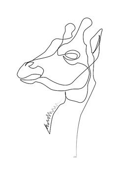

начало |
"Плюшени" крави |
Стъклена жаба |
Панда мравка |
Листовиден морски дракон |
Мравката "Панда" е открита в Чили, където местните жители я наричат „убиец на крави“, защото има мощен токсин, който може да убие крава след десетки ухапвания. Тя всъщност е специфичен вид оса от семейство Mutillidae, с изключително болезнено ужилване, чиято разцветка напомня тази на големия китайски бозайник, откъдето идва и името. Може да я видите в Китай и Южна Америка. Известна е със своите болезнени ужилвания. За разлика от обичайните мравки, тази не се кланя на мравките кралици и изобщо не се възприема като общ работник.
|
 |